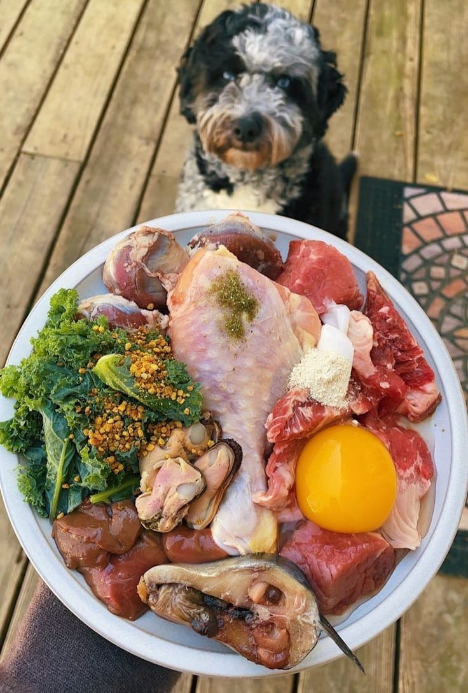
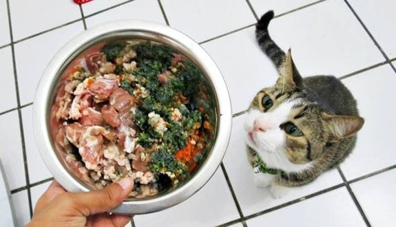

Pet Care
Aprende a prepar en casa la mejor alimentacion para tu mascota



Alimentacion funcional conciente
Es importante mantener una alimentación equilibrada y saludable, y la comida natural puede ser una excelente opción. Para perros, se recomienda incluir carnes magras como pollo, pavo o ternera, ya que son una fuente de proteínas de alta calidad. También se pueden agregar vegetales como zanahorias, calabazas o espinacas, que aportan vitaminas y fibra. En el caso de los gatos, incluye fundamentalmente en su dieta proteínas animales, como pollo, pescado o carne de res, ya que son carnívoros por naturaleza. Además, se pueden agregar pequeñas cantidades de verduras como calabaza o guisantes para aportar nutrientes adicionales
porsentaje de nutrientes en perros
Proteínas: Del 30% al 50% .Las proteínas son esenciales para el crecimiento y la reparación de tejidos. Los perros más activos o en crecimiento pueden necesitar un poco más, mientras que los perros menos activos pueden necesitar un poco menos.
Grasas: 15%. Las grasas proporcionan una fuente de energía concentrada, aunque esta cifra puede variar según las necesidades del perro y su nivel de
Carbohidratos: del 18 al 20%, proporcionan energía y también pueden ser útiles para la digestión
Fibra:2%, la fibra es importante para la salud digestiva.
Vitaminas y minerales: Los perros necesitan una amplia gama de vitaminas y minerales para mantenerse saludables. Estos nutrientes se obtienen de una variedad de alimentos y, en la mayoría de los casos, no se requiere una cantidad específica en porcentaje, ya que varían según la dieta y la fuente de alimentos.
Agua: El agua es esencial para la vida y debe estar siempre disponible para tu perro